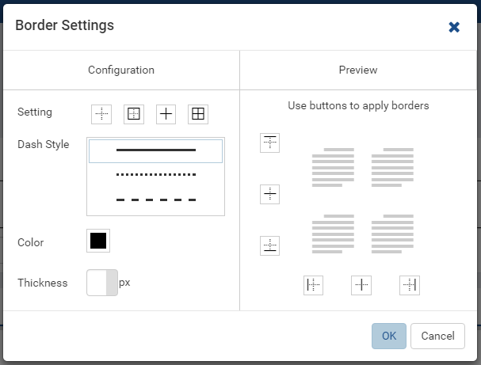
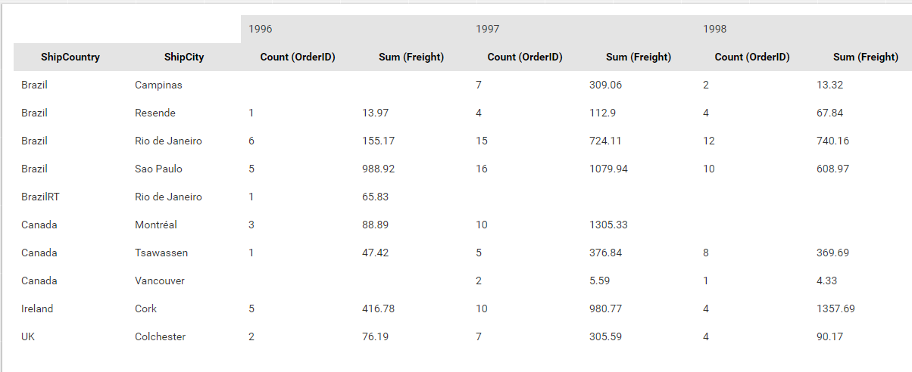

Report Designer/Grid¶
Grid is a built-in type of report part that displays data in a tabular format. It currently supports 4 different vertical, horizontal, pivot and drill-down styles.
Configure Report Part Properties for Grid¶
{kind=link}
- Select the grid in Report Body (See Manage Report Parts for how to add a grid).
- Click the expand icon (<) on the right to open the Properties boxes if needed.
- Select the vertical Report Part Properties box.
- The properties are listed in Report Part Properties box in 7
sections. (Fig. 215)
- General Info
- Table
- Columns
- Rows
- Headers
- Grouping
- View
User can define the properties and see changes reflected in Preview pane:
Select a style in Grid Style drop-down.
- Vertical: data is displayed vertically.
- Horizontal: data is displayed horizontally.
- Pivot (cross tabulation): data is displayed in a matrix format.
- Drill Down: data is displayed in collapsible groups of values to see the detailed or summarized numbers.
- 
Fig. 216 Report Designer - Border Settings
Define table border settings.
Click the gear icon (⚙) to open Border Settings pop-up.
Select pre-defined border styles: None (default), Outside, Inside or All,
or click specific border style buttons in Preview section to apply.
Select a line pattern: Solid (default), Dot or Dash.
Select a border color.
Select the border thickness (in pixels).
Click OK to close the Border Settings pop-up.
-
Set the background color.

Fig. 219 Report Designer - Columns Setting
Set the column width in pixels or characters.
Choose to alternate column background color for easier reading.
-
Set the row height (in pixels).
Choose to alternate row background color for easier reading.
-
Choose a header font face and font size.
Choose header text effects bold, italic and underlined.
Choose header text color and cell color.
Choose header text alignment left, center, right or justify.
Turn on or off word wrap option.
Optionally hides the header in export.
Select to use Separators, and select a display format for multiple-field Separator.
The Separators option displays multiple grids according to each unique value of the field(s) defined in Separators box.
For example, to display multiple grids, each one for each country and region in Northwind Orders table:
Tick Use Separator check-box in Grouping in Report Part Properties to see Separators box inside the grid configuration.
Add [ShipCountry] and [ShipRegion] to Separators box, they will show up as Group(ShipCountry) and Group(ShipRegion).
Add [ShipCity] to Columns box, then choose Group as the Function, it should show up as Group(ShipCity).
Add [OrderID] to Columns box, then choose Count as the Function, it should show up as Count(OrderID).
The result should be multiple grids, each for a specific country and region (Fig. 222).
Select a different Separator Style if needed. (Fig. 223 is to display both the labels and values in multiple levels.)
Optionally choose to print each grid in a new page by checking Page Break After Separator in Printing group.

Fig. 224 Report Designer - Data Refresh Interval
Configure how often data is refreshed when report is being viewed.
- Click the gear icon (⚙) to open Data Refresh Interval pop-up.
- Choose to have data refreshed automatically or manually.
- Enter an interval between each refresh (in seconds).
- Choose to view all data or enter a number to view that specific
number of latest records only.
Optionally display a long report in multiple pages.
Screenshot for Pivot columns per exported page to be added.
{kind=link}
{kind=link}
{kind=link}
{kind=link}
{kind=link}
{kind=link}
{kind=link}
Choose a Grid Style¶
- 
Fig. 225 Order Count by OrderYear, ShipCountry and ShipCity
The pivot grid styles must used when all the label values depend on the actual data (not predetermined). For example, this report with all the header values calculated from the data (OrderDate) must use the pivot style.
-
The drill-down grid style must be used for the need to expand and collapse groups of values to see the detailed or summarized numbers. For example, this report with the number of suppliers per city then per country must use the drill-down style.
-
The vertical and horizontal styles are used when some label values are already determined at design time. And horizontal style should be used when the list of label values is expectedly longer than the number of columns. For example: the list of US States and Territories by Population in Fig. 227.
{kind=link}
{kind=link}
{kind=link}
Define a Vertical or Horizontal Grid Content¶
A newly-added grid will have the default vertical style. User only needs to enter the title, description and define the columns to get it working.
- Optionally enter a title for the report.
- Optionally enter a description.
- Drag data source fields from middle panel into Columns text box to add them to the report.
A horizontal grid is defined in the same way as the vertical except that data source fields are added to Rows text box.
Define a Pivot Grid Content¶
To define this sample report:
- Select “Pivot” as the Grid Style in General Info group.
- Drag OrderDate field in Orders table from Middle Panel into Columns box.
- The field will be given the alias “Group(OrderDate)” (Group function is used as expected).
- Select the field in Columns box to open the Field Properties.
- Check to confirm that in Data Formatting group, “Year” is selected for the format.
- Drag ShipCountry field in Orders table from Middle Panel into Rows box.
- The field will be given the alias “Group(ShipCountry)” (Group function is used as expected).
- Drag ShipCity field in Orders table from Middle Panel into Rows box.
- The field will be given the alias “Group(ShipCity)” (Group function is used as expected).
- Drag OrderID field in Orders table from Middle Panel into Values box.
- The field will be given the alias “Sum(OrderID)” (not the expected Count function).
- Select the field in Values box to open the Field Properties.
- In Data Formatting, select “Count” as the Function.
- Drag Freight field in Orders table from Middle Panel into Values box.
- The field will be given the alias “Sum(Freight)” (Sum function
is used as expected).
Side Total
In a Pivot Grid report, Side Total values will provide the sum of all values for each field in Values box across each row.
To set up Side Total for a Pivot Grid report, check on the “Add Side Total” checkbox under Columns section in Configuration Section in report part backside.
{kind=link}
Define a Drill Down Grid Content¶
To define this sample report:
- Select Suppliers table in report Data Source.
- Add a grid to report body.
- Select “Drill Down” as the Grid Style in General Info group.
- Drag Country field in Suppliers table from Middle Panel into Groups box.
- The field will be given the alias “Group(Country)” (Group function is used as expected).
- Drag Region field in Suppliers table from Middle Panel into Groups box.
- The field will be given the alias “Group(Region)” (Group function is used as expected).
- Drag City field in Suppliers table from Middle Panel into Groups box.
- The field will be given the alias “Group(City)” (Group function is used as expected).
- Drag SupplierID field in Suppliers table from Middle Panel into Values box.
- The field will be given the alias “Sum(SupplierID)” (not the expected Count function).
- Select the field in Columns box to open the Field Properties.
- In Data Formatting, select “Count” as the Function.
- The Field Name Alias can be renamed to be more user-friendly (“Suppl
Cnt”).